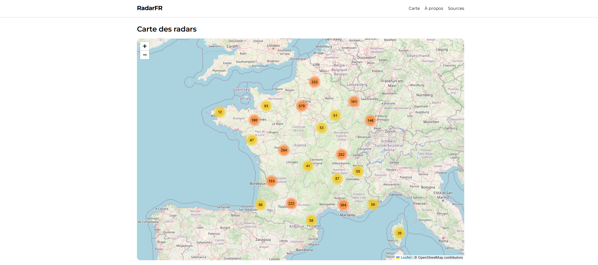
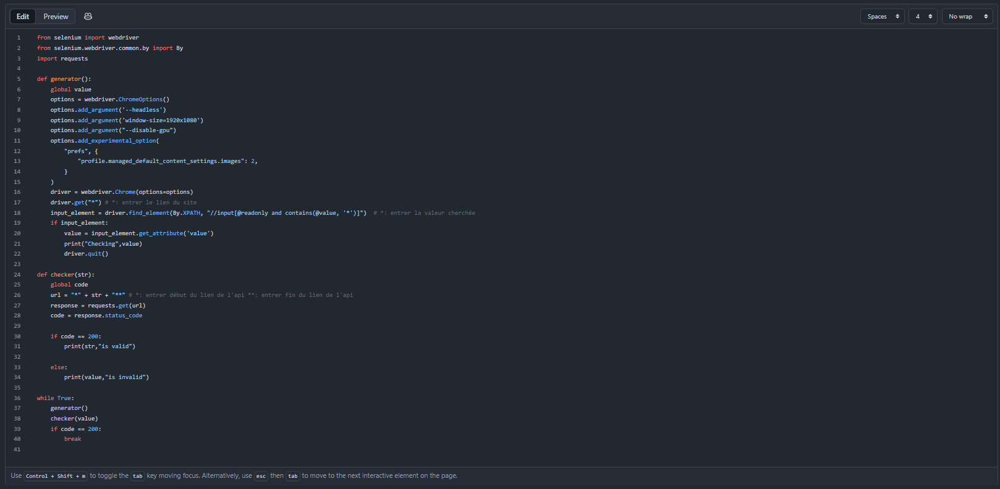
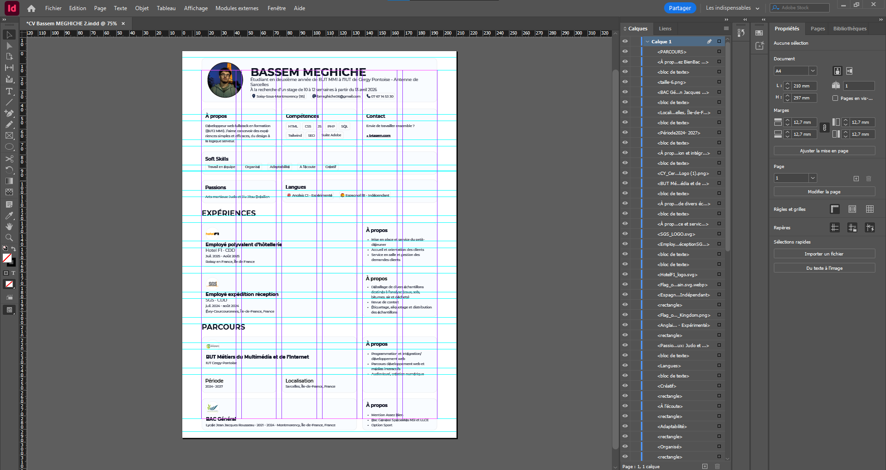

À propos
Développeur web fullstack en formation (BUT2 MMI). J’aime concevoir des expériences simples et efficaces, du design à la logique serveur.
Étudiant en deuxième année de BUT MMI à l’IUT de Cergy Pontoise - Antenne de Sarcelles
À la recherche d’un stage de 10 à 12 semaines à partir du 13 avril 2026
Développeur web fullstack en formation (BUT2 MMI). J’aime concevoir des expériences simples et efficaces, du design à la logique serveur.
Envie de travailler ensemble ?
bmeghiche06@gmail.comApplication interactive en Javascript permettant de visualiser sur une carte les radars en France. Utilisation de l'API fetch.
Programme python permettant de récupérer une information sur un site web et la tester sur l'api de ce dernier jusqu'à ce que l'api renvoie un code "200". Utilisation de Selenium
Réalisation de mon CV avec une mise en page inspirée du Bento UI. Projet mené sur InDesign, utilisant des grilles et repères ainsi que l’automatisation typographique via les styles de paragraphes.
